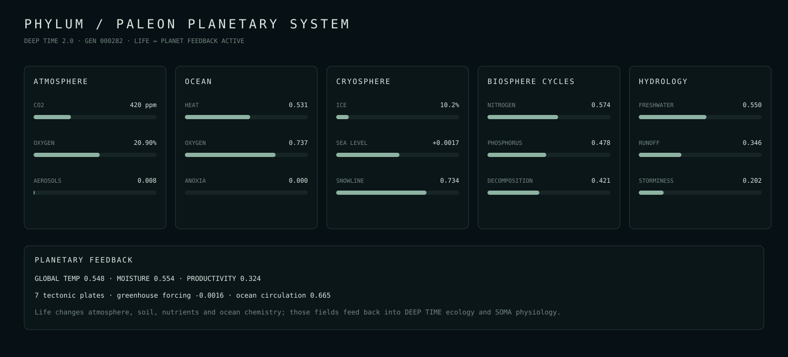

PHYLUM / PALEON
DEEP TIME 2.0 planetary systems dossier · generation 000280

Current planetary state
{
"generation": 280,
"temperature": 0.54782,
"moisture": 0.55361,
"productivity": 0.32358,
"atmosphere": {
"aerosols": 0.0075351,
"co2": 0.000419956,
"greenhouse_index": -0.001619,
"methane": 1.8745e-06,
"oxygen": 0.2090038,
"pressure": 1.0
},
"ocean": {
"acidity": 0.3,
"anoxia": 0,
"circulation": 0.6655,
"current_phase": 0.778182,
"heat": 0.53058,
"nutrients": 0.58471,
"oxygen": 0.73746
},
"cryosphere": {
"ice_fraction": 0.10203,
"sea_level_anomaly": 0.001739,
"snowline": 0.73435
},
"cycles": {
"available_nitrogen": 0.57422,
"available_phosphorus": 0.47784,
"decomposition": 0.42137,
"living_carbon": 0.40659,
"ocean_carbon": 0.64,
"soil_carbon": 0.52
},
"hydrology": {
"drought_index": 0,
"evaporation": 0.50361,
"flood_index": 0,
"global_freshwater": 0.55034,
"runoff": 0.34648,
"storminess": 0.20218
},
"plates": 7
}